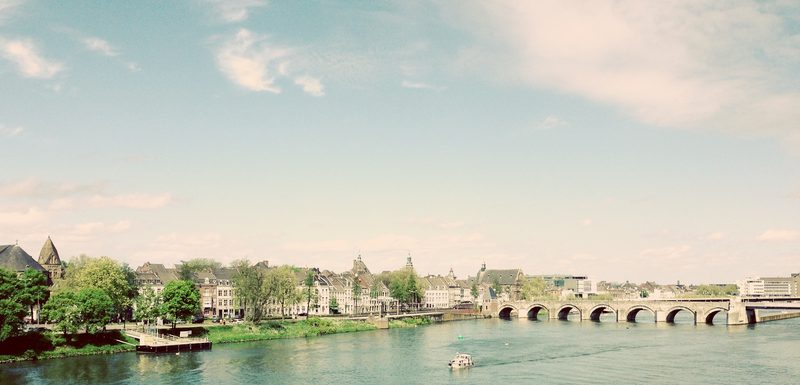

Doors open
Coffee, tea and time to find the faces you have not seen since graduation.
Saturday 10 October 2026 from 15:00 Tapijn, Maastricht
Fifteen years of curious minds in one small city. One afternoon to raise a glass to that, with the people who made it: alumni from every cohort, and the staff who taught, tested and tolerated them.
MSP opened its doors in 2011. Fifteen years, a few thousand tutorials and one unmistakable round logo later, we are getting the family back together for an afternoon at Tapijn: alumni of every year, current staff, and the colleagues who were there at the start.
The timing is no accident. Maastricht University celebrates its 50th birthday this academic year, so consider this MSP's contribution to the party season.
Coffee, tea and time to find the faces you have not seen since graduation.
A short hello and what MSP has been up to lately. Ten minutes, we promise.
Three alumni on where a science degree actually takes you. Speakers announced soon.
Settling once and for all which cohort was paying attention.
Drinks and snacks. The first two drinks are on us, the stories are on you.
The city centre is a ten minute stroll away. We suspect groups will form.
Updated as registrations come in.


The full then-and-now gallery, fifteen years of MSP in pictures, lands here soon.
Twenty seconds, five questions, done.
Registration opens in early September, together with the invitation email. The button will be right here the moment it is live.
Got this link from a friend and want the invitation too? Come back in September, the registration link will be on this page.
MSP alumni of every cohort, from the very first year to the class of 2026, plus current and former staff.
We are finalising numbers. The invitation email will give the definitive answer.
Really. MSP covers entry, snacks and your first two drinks. After that the bar is happy to see your card.
You will not be the only one flying in, and Maastricht in October is a strong argument on its own. Make a weekend of it.
The registration form has an optional field for exactly that, used only to arrange the catering.
Write to the MSP alumni office: email us.